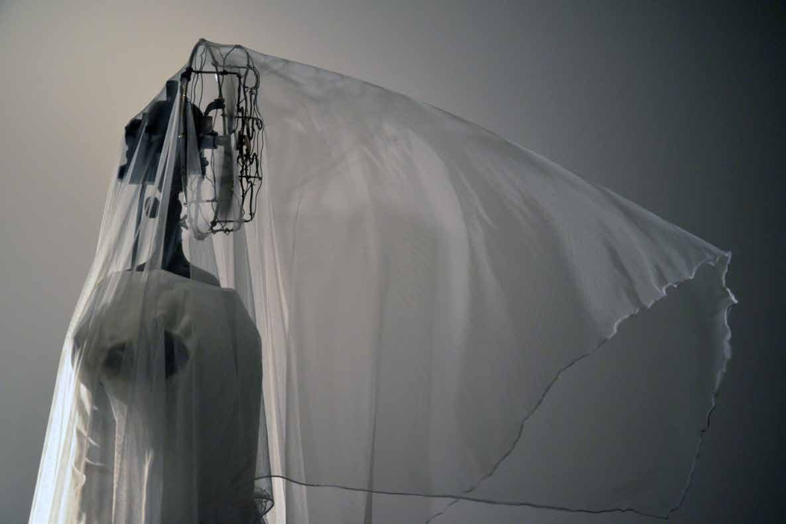
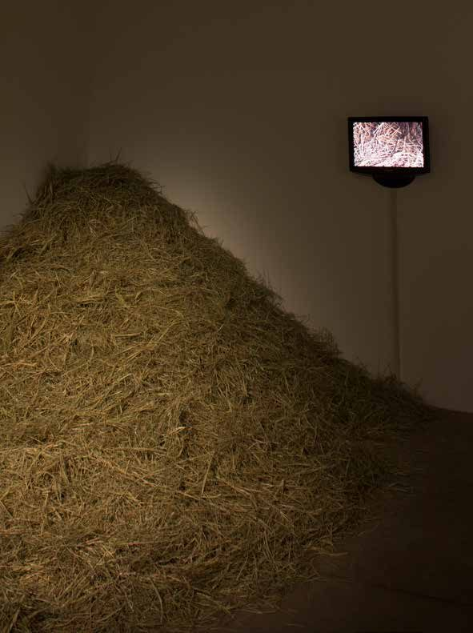
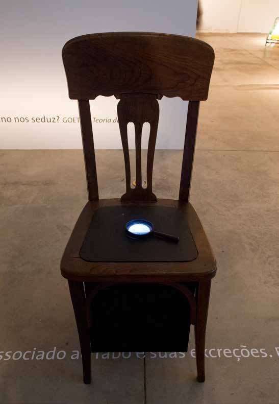
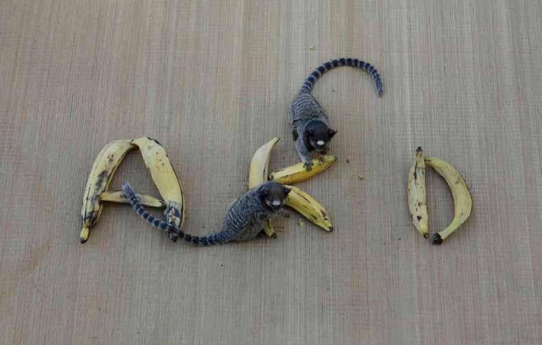
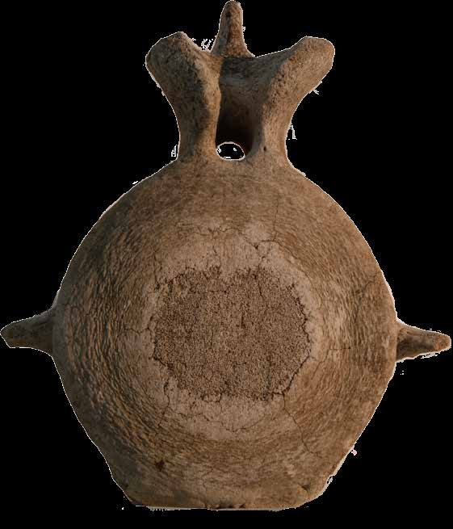
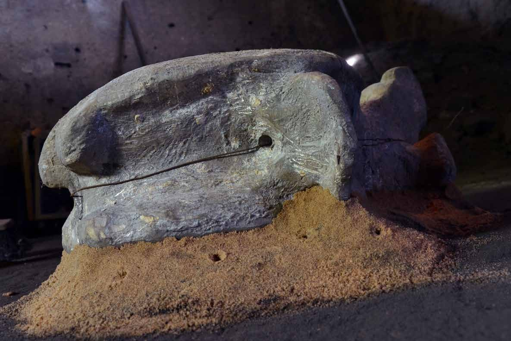
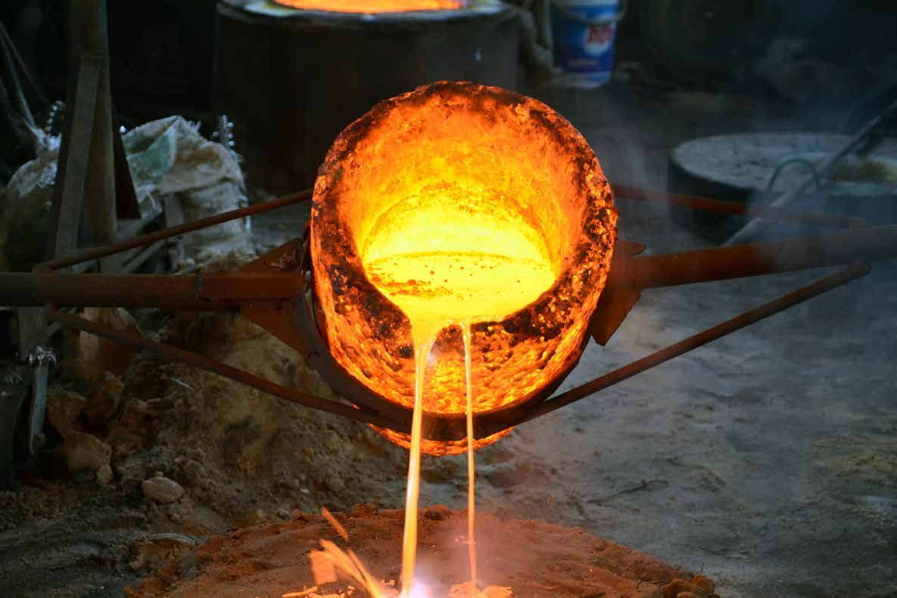

Experiência · CCBB Brasília, 2015
Tumulto III
A antologia da obra de Wagner Barja (1985–2015), publicada por ocasião da exposição no Centro Cultural Banco do Brasil. Aqui o livro vira site: cada obra tem seu espaço, todos os textos que falam dela e as imagens em alta resolução.
A exposição
O Ministério da Cultura e o Banco do Brasil apresentam Experiência Tumulto III, um panorama da produção artística de Wagner Barja, artista radicado na capital federal. A mostra revela uma obra “altamente coesa” que, constituída ao longo de três décadas, sempre foi marcada pelo caráter experimental, irreverente e reflexivo, pelo trânsito por diversas mídias e linguagens artísticas, pelo cruzamento de diferentes domínios, saberes e sensibilidades.
A exposição conta com trinta obras que evidenciam as diversas linguagens com as quais o artista trabalha — poesia visual, vídeos e fotografias, esculturas e instalações, performances e intervenções urbanas — e com uma instalação inédita, “Jonas”.
Centro Cultural Banco do Brasil, texto institucional do catálogo (2015).
A exposição em vídeo
113 minutosDois registros longos feitos no CCBB Brasília: a visita guiada e a roda de conversa com as curadoras.
Experiência Tumulto III
“Vemos por enigmas, ouvimos por dissonâncias. É esse lugar fora do lugar, que Barja não cessa de abrir. Por isso, suspeito que essa escrita-arte ao lado é, antes de tudo, ‘artesemnome’.”
Marisa Flórido César, curadora — texto de abertura do catálogo. Barja é um subversor da codificação da vida e da arte: apropria-se de ícones e mitos, textos e objetos, conceitos e saberes, e os associa de modo improvável, por vezes risível, desvelando as arbitrariedades dos signos e dos discursos. João Batista encontra-se com outro João, o Beuys; o sol/olho de Goethe transforma-se na quinta nota da escala; o olho converte-se no olho-ânus de Bataille.
Índice de obras
Todos os registros do catálogo — da Antologia da obra (1985–2015) às vídeo intervenções e à instalação Jonas. Cada obra reúne os textos que falam dela. Nenhuma obra ficou de fora.
 O Profeta e a Jaguatirica
O Profeta e a Jaguatirica
 O Cru e o Cozido
O Cru e o Cozido
 Neoconcreto
Neoconcreto
 Pega Monet, Pega Manet
Pega Monet, Pega Manet
 Deitado Eternamente
Deitado Eternamente

O Casamento de Márcia X com Marcel Duchamp Queops Brasilis
Queops Brasilis
 São João Beuys
São João Beuys

Agulha no Palheiro O Sol de Goethe
O Sol de Goethe

TV Anal Cultura x Natureza = Barbárie
Cultura x Natureza = Barbárie
 H2O Monet
H2O Monet
 Poema à Vista
Poema à Vista
 Ser ou Não Ser ao Gullar
Ser ou Não Ser ao Gullar

Armadilhas Semânticas A Vitória do Gallo
A Vitória do Gallo
 Despacho na Duna
Despacho na Duna
 Jonas
Jonas
Vídeo intervenções
Registros em vídeo das intervenções e performances de Wagner Barja: A Vitória do Gallo (Cachoeira do Arari, Ilha de Marajó — Funarte) e Despacho na Duna, crítica ao circuito de arte.
Registro em vídeo da mostra Experiência Tumulto III, no CCBB Brasília (2015).
Jonas — instalação inédita
Ver a página da obra — 25 imagens e os vídeos →
Jonas, o profeta desobediente, é engolido por uma baleia em alto mar e lá fica por três dias, em câmara escura. Barja, o artista tumultuador, devolve o visitante a esse ventre: águas projetadas, mônadas abertas, palavra e imagem em suspensão.
As páginas seguintes do catálogo documentam a instalação multimídia inédita criada para Experiência Tumulto III, com texto de Maria Thereza Azevedo (“Jonas: deslocamentos e repetições em instalação multimídia”) e de Antônio Miranda (“Verbivocovisualidade na instalação Jonas”).
A textura de água projetada na instalação Jonas — a mesma imagem que atravessa o fundo desta página.
Textos que falam da instalação
JONAS JONAS: DESLOCAMENTOS E REPETIÇÕES EM INSTALAÇÃO MULTIMÍDIA Maria Thereza Azevedo VERBIVOCOVISUALIDADE NA INTALAÇÃO “JONAS” ANTÔNIO MIRANDA SUMÁRIO INSTITUCIONAL CENTRO CULTURAL BANCO DO BRASIL EXPERIÊNCIA TUMULTO III Marisa Flórido César Curadora ANTOLOGIA ONDE O ENIGMA É O ÍMÃ Adolfo Montejo Navas ARMADILHAS SEMÂNTICAS ENTRE A CADEIA ALIMENTAR, O CÓDIGO LINGUÍSTICO E O CÓDIGO FLORESTAL. Marília Panitz VÍDEO INTERVENÇÕES FICÇÕES CRIADORAS Marisa Flórido César A VITÓRIA DO GALLO DESPACHO NA DUNA
Catálogo Experiência Tumulto III — pág. 5artística de Wagner Barja, artista radicado na capital federal. A mostra nos revela uma obra “al- tamente coesa” que, constituída ao longo de três dé- cadas, sempre foi marcada pelo caráter experimen- tal, irreverente e reflexivo, pelo trânsito por diversas mídias e linguagens artísticas, pelo cruzamento de diferentes domínios, saberes e sensibilidades. A exposição conta com trinta obras que eviden- ciam as diversas linguagens com as quais o artista trabalha – poesia visual, vídeos e fotografias, escul- turas e instalações, performances e intervenções urbanas – e com uma instalação inédita, “Jonas”. Ao realizar essa antologia, o Centro Cultural Banco do Brasil possibilita ao público a experimentação da arte contemporânea por meio de novas linguagens, contribui para a educação e democratização da cul- tura e valoriza a produção artística local. CENTRO CULTURAL BANCO DO BRASIL
Catálogo Experiência Tumulto III — pág. 6tudo, “artesemnome.” lugar do homem e de sua fala e imagem precisas): tal falha fundamental é a própria condição de sua existência. Em um mundo ainda a ser visto, nomea- do, recriado, é a partir do silêncio que se enunciam as palavras, é a partir do invisível que a imagem cintila, enfrentando tanto a incompletude como a satura- ção cega das visibilidades e a tirania dos discursos. Tropeçamos na vertigem da palavra, na cegueira das imagens. Não por acaso, ambas questões importan- tes para Wagner Barja. Experiência Tumulto III - divi- dida em duas sessões, “Antologia” e a instalação iné- dita “Jonas”- reúne sua produção realizada ao longo de três décadas e que sempre transitou por diver- sas mídias e expressões artísticas, por domínios distintos, cruzando e interrogando os saberes e as sensibilidades. Somos introduzidos em um universo que transborda em poemas “animaverbovocovisu- ais” (suas “obranomes”), instalações e intervenções, performances ou vídeos. Uma profusão de ima- gens, objetos e palavras, textos e personagens que se entrelaçam, como se fundassem ou revolvessem um mundo em contínuo processo de transmutação. Uma cosmogonia fabulosa em que vagam criaturas bizarras, híbridos
Catálogo Experiência Tumulto III — pág. 8JONAS FOTO Daniel Mira
Catálogo Experiência Tumulto III — pág. 76Jonas, o profeta desobediente é engolido por uma baleia em alto mar e lá fica por três dias, em ca- marinha. Barja, o artista tumultuador, vomita as vértebras da baleia, mas antes, cava-lhes no osso para injetar/enfurnar imagens, vertendo e inver- tendo memórias de águas naquilo que dá susten- tação aos corpos. Victor Turner afirma que toda experiência é um risco e uma trans-forma. Na obra Jonas, de Wagner Barja, a experiência/risco é a de um performador invisível que pratica a ideia de corpo sem órgãos de Antonin Artaud. Des-organiza e des-obedece a ordem das coisas. Tira as vértebras da baleia do
Catálogo Experiência Tumulto III — pág. 77ofundas, rasas, turvas, tranquilas, violentas, vermelhas. A água, geradora de vida e de travessia, não cessa de dissolver-se e transformar-se. Bachelard lembra que o sonhador da água é um ser em vertigem que deixa constan- temente desmoronar algo de si. Para ele a água é matéria que está sempre prestes a tornar-se outra. Os híbridos e os fora de lugar provocam estranha- mentos, como provocaram os monstros míticos do medievo ou os ready made de Marcel Duchamp. Tu- multuam, des-consertam, des-estabilizam e levam a rearranjos em nossa percepção. Obra síntese da exposição Experiência Tumulto III, Jonas carrega a trajetória do artista, que vem praticando desloca- mentos desde Deitado eternamente de 1986. É um tirar coisas do lugar e reordenar, mas não, sem antes passar pelas entranhas do tumulto antropofágico, que pode instigar territórios de existência e alterar os modos de subjetivação hegemônicos. No caldeirão de bruxas da arte contemporânea, me- xem-se poções que misturam procedimentos trazi- dos da história da arte. Em Jonas, além de evocar o mítico/bíblico Jonas, engolido pela baleia e as práti- cas medievais da fundição, o artista nos remete ao dadaísmo e ao minimalismo, pois pra
Catálogo Experiência Tumulto III — pág. 78VERBIVOCOVISUALIDADE NA INTALAÇÃO “JONAS” ANTÔNIO MIRANDA A animaverbivocovisualiade – AV3 (*) é invocada no processo de registro do conhecimento objetivo — conforme a teoria de Karl R. Popper — e segundo os propósitos de cada autor/criador em diversas áreas do conhecimento. Consequentemente, um cientista utiliza, além de textos (discursos analíticos, citações, epígrafes, etc.), ou recurso “voco” da tríade verbivo- covisual dos concretistas Haroldo e Agusto de Cam- pos/Décio Pignatari) em registro textual direto e/ou indireto (por hipertextualidade); amplia com ima- gens estáticas ou dinâmicas (“visual” e animação) para ilustrar a a
Catálogo Experiência Tumulto III — pág. 94nterpretante , no ritual semiótico se dá no estilo triádico peirceano seguinte: INTERPRETANTE OBJETO SIGNO O diagrama triangular (conforme C.K. Ogden e I. A. Richard) pretende traduzir a relação semiótica explicitada por Charles Sanders Peirce como im- perativo no entendimento da signific-ação. Não cabe aqui apresentar todos os desdobramentos dessa relação interpretante—objeto—signo, ape- nas frisar que o interpretante atua a partir de sua própria experiência, memória, visão de Mundo, ca- pacidade interpretativa, ontológica ou sensorial, dependendo da anima que anima este “olhar”. No caso de “Jonas” aqui referenciado, além dos textos de apresentação da obra, existe a possível evocação (“vocal”, subjetiva) do personagem bíblico engoli- do pela baleia, que inspirou o trabalho do artista. A “baleia” é representada objetualmente median- te “vértebras” dependuradas, não em sequência, mas em conjunto expositivo, contendo disposi- tivos eletrônicos mostrando imagens de ondas marinhas (luminosas), formando um conjunto impressionante e impactante, mas poético. Vi- sual, mas combinando objetos e imagens em movimento, completado com a projeção de um vídeo com as mesmas ondas sobre as peças “v
Catálogo Experiência Tumulto III — pág. 95of Wag- ner Barja - an artist living in the country’s capital. The exhibit reveals a “highly cohe- sive” work built in the past three decades, marked by an experimental character, ir- reverent and reflexive, and by the transit through diverse communication media and artistic languages, by the crossing of different domains, bodies of knowledge and sensibilities. The exhibit’s thirty works show the diver- se languages with which the artist works - visual poetry, videos and photography, sculptures and installations, performan- ces and urban interventions - and a never seen before installation, “Jonas”. By producing this anthology, Banco do Bra- sil’s Cultural Center gives the public a chan- ce to experiment with contemporary art through new languages, contributing to education with the democratization of cul- ture, valuing the local artistic production. CENTRO CULTURAL BANCO DO BRASIL
Catálogo Experiência Tumulto III — pág. 103which they have never had (the place of man and his speech and his precise image): this fun- damental failure is the very condition of their existence. In a world still to be seen, named, recreated, it is from the silence that words are pronounced; it is from the invisible that the image sparkles, facing both the incompleteness and the blind saturation of visibilities and the speeches’ tyranny. We stumble in the vertigo of the word, in the blindness of the images. It is no ac- cident that both are important issues for Barja. Experiência Tumulto III - divided in two sections, “Anthology” and “Jonas”, a never seen before installation - encom- passes the artist’s production, which has always transitioned through different me- ans of communication and artistic expres- sions, through distinct domains, crossing and questioning bodies of knowledge and sensibilities. We are introduced to a uni- verse that overflows in poems “animaver- bovocovisuais” (his “obrasnomes” /“work- names”), installations and interventions, performances or videos. A profusion of images, objects and words, texts and characters that are interwoven, as if they established or circled around a world in a continuous pro
Catálogo Experiência Tumulto III — pág. 104Jonah, the disobedient prophet is swallowed in the high seas by a whale and there he stays for three days, isolated. Barja, the riot artist, vomits the whale’s vertebrae, but before doing so, he digs into the bones to inject/insert images, pouring and inverting memories of waters which gives the bodies their bearing. [took out that…before read that which] Victor Turner says that every experience is a risk and a trans-form. In Wagner Barja’s work Jonas, the experience/risk is the one of an invisible performer that practices Antonin Artaud’s idea of body without or- gans, dis-organizing and dis-obeyi
Catálogo Experiência Tumulto III — pág. 108ct, through hipertextuality; she amplifies with static or dynamic images (“visual” and animation) to illustrate the presenta- tion of graphics, mathematical formulas, tag clouds, videos, interviews etc. There are no limits to the usage of these resources in an aggregating way or of a transforma- tion into a purely digital state, through the virtual composition´s own amalgam. Metaphors, audiovisual appeals, multi- media, each and every element imposed by the author´s creativity are part of the anima, in the dual sense of poiesis (crea- tion) and of the technological means used in the process. “Jonas” is an artistic installation curated museologically in a room of its own to ac- climate the creation of multimedia poet Wagner Barja. It begins with a presenta- tion of texts by Marisa Florido Cesar and Antonio Miranda — both in Portuguese and in English – in the antechamber and entryway of the main exhibit area, to in- form the public about its purposes as well as the technical and theoretical aspects of the installation. Many read before the vi- sit, others after the visit, others read twice and some don´t read at all. No problem. The true “reading”, even better, “interpre- tation” of
Catálogo Experiência Tumulto III — pág. 110Jonas em imagens







